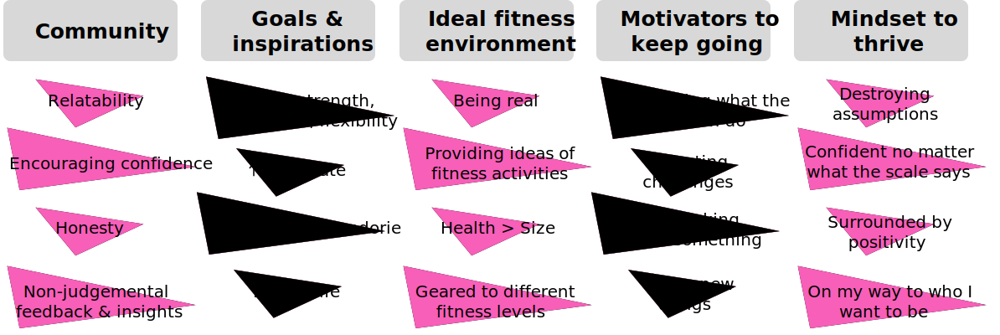
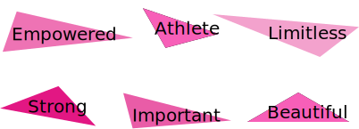
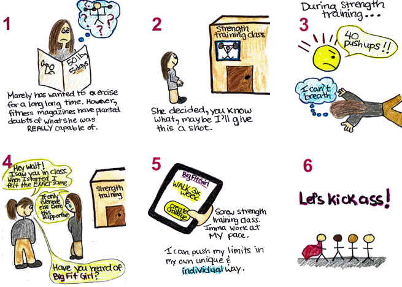

The User
Primary audience: plus-size women already part of their Facebook BFG group.
We interviewed 7 users.
Key Findings

Best motivated by: a supportive community
Exercise goals: personal/internal fulfillment
Ideal fitness environment: authentic, individually tailored, health focused
Motivators: approach oriented, positivity
Mindset: self-acceptance, positivity
The Problem
Want to keep fit, healthy and confident through support.
Being there for you, not being there for calorie burn and it doesn't matter who you are but... everybody works at their own pace, and everybody does what they want to do. So just trying to encourage people in the most positive way and get them to work wherever their level is.
Scenarios
- Mika is part of the BFG Facebook page. She loves its vibes and can relate with its members. She wants to form a workout group with BFG members in her city. However, there are too many members to look through.
- Sarah wants to start walking home on the daily. However, she often gets discouraged and wants an accountability group within the BFG community to keep her on track. She feels safe to share her struggles with them.
Our Solution
Create an app that can encourage users to exercise:
(1) Through community challenges, both online and in-person
(2) By building a postive mindset
Online community challenges: Sarah can engage in her own exercise activity while enjoying the support of others through online accountability.
Meet-up community challenges: Mika can exercise with locals in her city to whom she can relate; people with a mindset promoted by the BFG brand.
Building a positive mindset: this app gets you in a positive mindset from the moment you open it. Language and imagery create positive vibes for the users.

Storyboard
In this storyboard, Marely, like many other women, is struggling to conform with the current fitness industry. It shows how the BFG app encourages an environment of positivity and growth, for whatever level you are at. Read more below.
